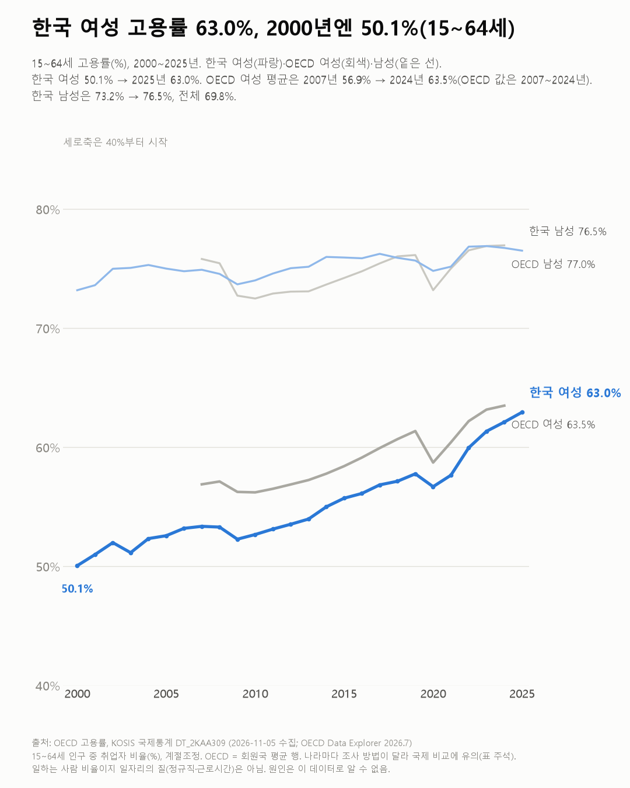
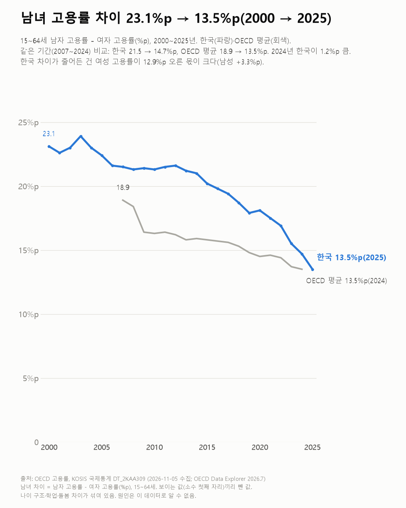

일하는 한국 여성, 이제 OECD 평균 바로 아래까지 왔어요
일하는 여성의 비율은 OECD 평균 바로 아래까지 왔어요. 다만 그 일이 전일제인지, 일주일에 몇 시간인지는 이 표로 알 수 없어요.

3줄 요약
- 2025년 15~64세 한국 여성 중 일하는 사람은 63.0%예요. 2000년엔 50.1%였어요.
- 100명 가운데 일하는 사람이 여성은 남성보다 2000년엔 23.1명 적었는데, 2025년엔 13.5명 적어요.
- 2024년 한국 여성 고용률(62.1%)은 OECD 여성 평균(63.5%)에 거의 다가왔어요.
2007년 OECD 여성 평균 고용률은 56.9%였어요. 이 표에 OECD 평균이 처음 나오는 해예요. 같은 해 한국은 남녀 차이가 100명당 21.5명이었어요.
그 뒤 OECD 여성 평균은 2024년 63.5%가 됐어요. 한국 여성은 2024년 62.1%, 2025년 63.0%로 이 평균에 거의 다가왔어요.
한국만 길게 보면 여성 고용률은 2000년 50.1%에서 2025년 63.0%로, 100명당 12.9명 늘었어요. 같은 기간 남성은 73.2%에서 76.5%로 100명당 3.3명 늘었어요. 여성 쪽이 더 많이 올라서 남녀 차이가 줄었어요.
남녀 차이(100명당 몇 명 차이인지)는 한국이 2000년 23.1명에서 2025년 13.5명으로 줄었어요. 같은 기간(2007~2024)으로 맞추면 한국은 21.5명에서 14.7명으로, OECD 평균은 18.9명에서 13.5명으로 줄었어요. 2024년엔 한국 차이가 OECD 평균보다 1.2명 커요. 차트 끝 라벨은 각자 마지막 해라서 한국은 2025년 13.5, OECD는 2024년 13.5예요. 소수점까지 같지만 해가 달라서, 같은 해끼리 비교는 2024년 값으로 했어요.


일하는 사람 비율은 거의 따라왔어요. 그 일이 전일제인지, 일주일에 몇 시간인지는 이 표엔 없었어요.
이 숫자는 어디서 왔나요
출처
기준일 2000~2025년이에요.
OECD(Data Explorer 2026.7)
- 고용률KOSIS DT_2KAA309원본 보기
15~64세, 전체·남·여, 한국 2000~2025, OECD 평균 2007~2024
어떻게 셌나요
- OECD가 나라별로 모은 국제통계예요. KOSIS 국제통계에 실린 표를 썼어요.
- 고용률은 15~64세 인구 가운데 일하는 사람(취업자)의 비율이에요. 계절에 따른 출렁임을 뺀 계절조정 값이에요.
- 나라마다 조사 방법이 달라 국제 비교에 유의하라는 표 주석이 있어요.
- OECD 평균 행은 2007~2024년만 있어서, 한국과의 비교는 그 기간끼리 했어요.
한계 3가지
이 데이터로 말할 수 없는 것
- 일하는 사람 비율이에요. 정규직인지, 몇 시간 일하는지 같은 일자리의 질은 이 데이터로 알 수 없어요.
- 남녀 차이엔 나이 구조·학업·돌봄 차이가 섞여 있어요. 원인은 말하지 않아요.
- 임금 차이는 성별 임금 격차 글, 육아휴직은 육아휴직 글, 근로시간은 근로시간 글에서 다뤘어요.
새 글 나오면 받아 보기
피드 리더 앱에 이 사이트 주소를 한 번 넣어 두면, 새 글이 올라올 때 앱에 떠요. 가입이나 메일 주소는 필요 없어요.
받는 법 보기
- 피드 리더 앱을 하나 골라요. 새 글을 모아 보여 주는 앱이에요. 예를 들면 Feedly나 Inoreader가 있어요. 둘 다 무료고 웹·휴대폰에서 써요.
- 앱에서 '구독 추가'(+)를 누르고 아래 주소를 붙여 넣어요.
- 끝이에요. 새 글이 올라오면 앱 목록에 떠요.
https://protofu.github.io/opendata-insight/feed.xmlFeedly를 쓴다면 여기를 눌러 바로 추가할 수도 있어요.